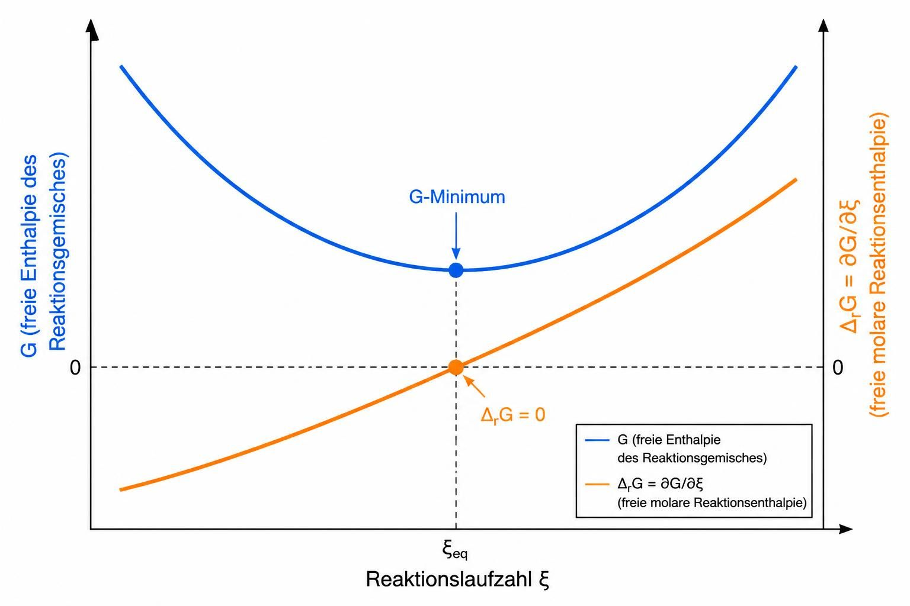

1.4 Chemisches Gleichgewicht
Hier entsteht deine Formelsammlung zu Gleichgewichtskonstanten, Stoffumwandlungen und Phasenregeln.
ΔG am Beispiel für Gase (über isotherme Raumänderung)
dG = (∂G/∂p)T dp + (∂G/∂T)p dT
dG = Vdp - SdT
(∂G/∂p)T = V; V=nRT/p
pgesamt ist zwar konstant, aber nicht die Partialdrücke!
dG = nRT (1/p) dp = nRT dln p
ΔG = nRT ln(p/p0); p/p0 = a
ΔG = nRT ln a
p0 → p; Δ(p0-->p)G !
1. Stell dir vor, die Gaskomponente i befindet sich anfangs rein in einem eigenen Volumen beim Standarddruck p0.
2. Nun expandiert dieses Gas isotherm in das größere Gesamtvolumen der späteren Mischung. Dabei sinkt der Druck dieses Gases von p0 auf seinen späteren Partialdruck pi.
3. Da es sich um ein ideales Gas handelt, ist das anschließende Zusammenschieben der verschiedenen expandierten Gase (Mischen bei konstantem Gesamtdruck) energetisch völlig kostenlos ΔmixH = 0.
dG = Vdp - SdT
(∂G/∂p)T = V; V=nRT/p
pgesamt ist zwar konstant, aber nicht die Partialdrücke!
dG = nRT (1/p) dp = nRT dln p
ΔG = nRT ln(p/p0); p/p0 = a
ΔG = nRT ln a
p0 → p; Δ(p0-->p)G !
1. Stell dir vor, die Gaskomponente i befindet sich anfangs rein in einem eigenen Volumen beim Standarddruck p0.
2. Nun expandiert dieses Gas isotherm in das größere Gesamtvolumen der späteren Mischung. Dabei sinkt der Druck dieses Gases von p0 auf seinen späteren Partialdruck pi.
3. Da es sich um ein ideales Gas handelt, ist das anschließende Zusammenschieben der verschiedenen expandierten Gase (Mischen bei konstantem Gesamtdruck) energetisch völlig kostenlos ΔmixH = 0.
Ka - thermodynamische Gleichgewichtskonstante
νA A → νB B
ΔRGm = νA Gm,A + νB Gm,B
ΔRGm0 = νA Gm,A0 + νB Gm,B0
--------------------------------------
ΔRGm - ΔRGm0 = νA (Gm,A - Gm,A0) + νB (Gm,B - Gm,B0)
ΔRGm - ΔRGm0 = νA RT ln aA + νB RT ln aB
ΔRGm - ΔRGm0 = RT ln aAνA + RT ln aBνB
ΔRGm - ΔRGm0 = RT ln (aB-νB / aAνA)
ΔRGm - ΔRGm0 = RT ln KA
ΔRGm = νA Gm,A + νB Gm,B
ΔRGm0 = νA Gm,A0 + νB Gm,B0
--------------------------------------
ΔRGm - ΔRGm0 = νA (Gm,A - Gm,A0) + νB (Gm,B - Gm,B0)
ΔRGm - ΔRGm0 = νA RT ln aA + νB RT ln aB
ΔRGm - ΔRGm0 = RT ln aAνA + RT ln aBνB
ΔRGm - ΔRGm0 = RT ln (aB-νB / aAνA)
ΔRGm - ΔRGm0 = RT ln KA
Das Chemische Potential µi
µi = (∂G/∂n)T,p bei den üblichen Bedingungen T,p = konst.
(∂G/∂n): partiell molar aber Gm = G / n ist molar
Für ein System mit einer einzigen Substanz ist µ = Gm.
Sonst µA = Gm,A + RT ln xA
... = µA0 + RT ln xA
µi = (∂F/∂n)V,T bei V,T = konst.
µi = (∂H/∂n)p,S bei p,S = konst.
µi = (∂U/∂n)V,S bei V,S = konst.
dimensionslose Größe (Vereinfachung): ^µi = µi/(RT)
(∂µi/∂T)p,x = -Sm,i (∂µi/∂p)T,x = Vm,i
((∂µi/T) / ∂T)p,x = -Hm,i / T2
chemisches Potential einer Lösungskomponente:
(Herleitung über die statistische Unordnung)
dµ = -SmdT + Vmdp
→ Integration wenn S,V konst.
µi = Gi0 + Si (T0-T) + Vm,i (p-p0)
Ein Konstanthalten von S über ein Temperaturintervall widerspricht den Naturgesetzen. Deswegen „schluckt“ man diesen problematischen Term in der Praxis, indem man den Standardwert temperaturabhängig definiert: Gi0(T). Dazu kommt nun noch die Mischungsentropie:
SM,i = - R ln xi
µi(T,p) = Gi0(T) + (- T SM,i) + Vm,i (p-p0)
μi(T,p) = Gi0(T) + RT ⋅ ln ai + Vm,i (p-p0)
(∂G/∂n): partiell molar aber Gm = G / n ist molar
Für ein System mit einer einzigen Substanz ist µ = Gm.
Sonst µA = Gm,A + RT ln xA
... = µA0 + RT ln xA
µi = (∂F/∂n)V,T bei V,T = konst.
µi = (∂H/∂n)p,S bei p,S = konst.
µi = (∂U/∂n)V,S bei V,S = konst.
dimensionslose Größe (Vereinfachung): ^µi = µi/(RT)
(∂µi/∂T)p,x = -Sm,i (∂µi/∂p)T,x = Vm,i
((∂µi/T) / ∂T)p,x = -Hm,i / T2
chemisches Potential einer Lösungskomponente:
(Herleitung über die statistische Unordnung)
dµ = -SmdT + Vmdp
→ Integration wenn S,V konst.
µi = Gi0 + Si (T0-T) + Vm,i (p-p0)
Ein Konstanthalten von S über ein Temperaturintervall widerspricht den Naturgesetzen. Deswegen „schluckt“ man diesen problematischen Term in der Praxis, indem man den Standardwert temperaturabhängig definiert: Gi0(T). Dazu kommt nun noch die Mischungsentropie:
SM,i = - R ln xi
µi(T,p) = Gi0(T) + (- T SM,i) + Vm,i (p-p0)
μi(T,p) = Gi0(T) + RT ⋅ ln ai + Vm,i (p-p0)
-
Anwendung auf Gase:
Vm niemals als konstant annehmen!
μi = μi0(T) + RT ln(p/p0) + RT ln xi = μi0(T) + RT ln(pi/p0).
-
Anwendung auf Flüssigkeiten:
Flüssigkeiten sind kaum komprimierbar. Ihr Molvolumen Vm ist sehr klein und nahezu konstant. Bei moderaten Drücken (z. B. 1 bis 5 bar) ist der Term Vm(p-p0) so winzig, dass man ihn in der Chemie meistens komplett vernachlässigt. Erst bei extremen Drücken (Geowissenschaften, Tiefsee) spielt er eine Rolle.
-
Anwendung auf Feststoffe:
Genau wie bei Flüssigkeiten ist Vm konstant und extrem klein. Der Druckeinfluss auf das chemische Potenzial von Feststoffen wird im Labor fast immer vernachlässigt. Wenn es sich um einen reinen Feststoff handelt (keine Mischung), ist seine Aktivität per Definition immer ai = 1. Damit fällt der Term RT ln(1) komplett weg = 0. Nur bei echten festen Lösungen (Legierungen, Mischkristallen) nutzt man den Molenbruch xi.
Aktivität a
für Gase:
ai = ci / c0; c0 meist 1 mol/l
ai = xi; für Lösungsmittel
aLM = pLM / pLM,rein ; Aktivität eines Lösungsmittels mittels Raoultschem Gesetz
ai = fi ci ; für Elektrolytlösungen mittels Aktivitätskoeffizienten
- isobar: ai = pi / p0; p0 meist 1 bar oder 1 atm
- isochor: ai = ci / c0; c0 meist 1 mol/l
ai = ci / c0; c0 meist 1 mol/l
ai = xi; für Lösungsmittel
aLM = pLM / pLM,rein ; Aktivität eines Lösungsmittels mittels Raoultschem Gesetz
ai = fi ci ; für Elektrolytlösungen mittels Aktivitätskoeffizienten
Fugazität f
f = φ p
ln φ = 1 R · T ∫0p (Vm-Vm,ideal) dp
φ : Fugazitätskoeffizient
Reaktionsgrößen Z(R) des Reaktionsgemisches
A → 2 B
V(R) = nA Vm,A + nB Vm,B
H(R) = nA ΔBHm,A + nB ΔBHm,B
Cp(R) = nA Cp,m,A + nB Cp,m,B
S(R) = nA (Sm,A - R ln xA) + nB (Sm,B - R ln xB)
G(R) = nA (ΔBGm,A + RT ln xA) + nB (ΔBGm,B + RT ln xB)
dimensionslose Größen (reduziert) zwecks Vereinfachung:
Ĥ(R) = H(R) / (RT)
Ŝ(R) = S(R) / R
Ĝ(R) = H(R) / (RT)
V(R) = nA Vm,A + nB Vm,B
H(R) = nA ΔBHm,A + nB ΔBHm,B
Cp(R) = nA Cp,m,A + nB Cp,m,B
S(R) = nA (Sm,A - R ln xA) + nB (Sm,B - R ln xB)
G(R) = nA (ΔBGm,A + RT ln xA) + nB (ΔBGm,B + RT ln xB)
dimensionslose Größen (reduziert) zwecks Vereinfachung:
Ĥ(R) = H(R) / (RT)
Ŝ(R) = S(R) / R
Ĝ(R) = H(R) / (RT)
Molare Reaktionsgrößen ΔRZm
A → 2 B
ΔRVm = -1 Vm,A + 2 Vm,B
ΔRHm = -1 ΔBHm,A + 2 ΔBHm,B
ΔRCp,m = -1 Cp,m,A + 2 Cp,m,B
ΔRSm(ξ) = -1 (Sm,A - R ln xA) + 2 (Sm,B - R ln xB)
... = -1 Sm,A + 2 Sm,B - R ln (xB2/xA)
ΔRGm(ξ) = -1 (ΔBGm,A + RT ln xA) + 2 (ΔBGm,B + RT ln xB)
... = -1 ΔBGm,A + 2 ΔBGm,B + RT ln (xB2/xA)
ΔRGm(ξ) = -1 µA(ξ) + 2 µB(ξ)
im Gleichgewicht ist ΔRGm = 0 ⇒ 1 µA = 2 µB
dimensionslose Größen (reduziert) zwecks Vereinfachung:
ΔRĤm = ΔRHm / (RT)
ΔRŜm = ΔRSm / R
ΔRĜm = ΔRHm / (RT)
außerdem:
ΔRCp,m = Σ ν Cp,m (Produkte) - Σ ν Cp,m (Edukte)
ΔRHm = ΔRHm (T1) + ∫ ΔRCp,m dT
ΔRVm = -1 Vm,A + 2 Vm,B
ΔRHm = -1 ΔBHm,A + 2 ΔBHm,B
ΔRCp,m = -1 Cp,m,A + 2 Cp,m,B
ΔRSm(ξ) = -1 (Sm,A - R ln xA) + 2 (Sm,B - R ln xB)
... = -1 Sm,A + 2 Sm,B - R ln (xB2/xA)
ΔRGm(ξ) = -1 (ΔBGm,A + RT ln xA) + 2 (ΔBGm,B + RT ln xB)
... = -1 ΔBGm,A + 2 ΔBGm,B + RT ln (xB2/xA)
ΔRGm(ξ) = -1 µA(ξ) + 2 µB(ξ)
im Gleichgewicht ist ΔRGm = 0 ⇒ 1 µA = 2 µB
dimensionslose Größen (reduziert) zwecks Vereinfachung:
ΔRĤm = ΔRHm / (RT)
ΔRŜm = ΔRSm / R
ΔRĜm = ΔRHm / (RT)
außerdem:
ΔRCp,m = Σ ν Cp,m (Produkte) - Σ ν Cp,m (Edukte)
ΔRHm = ΔRHm (T1) + ∫ ΔRCp,m dT
Vergleich Reaktionsgröße-/Molare Reaktionsgröße von G

ξ : Reaktionslaufzahl
Umrechnungen für ideales Gas
ci / xi = ngesamt / Vgesamt = pgesamt / (RT)
pi / xi = RT ngesamt / Vgesamt = pgesamt
ci / pi = 1 / (RT)
pi / xi = RT ngesamt / Vgesamt = pgesamt
ci / pi = 1 / (RT)
Gleichgewichtskonstanten
thermodynamisch und grundsätzlich dimensionslos:
Kx = Π xiνi = exp (-ΔRGm,x0 / (RT))
Kp = Π (pi/p0)νi = exp (-ΔRGm,p0 / (RT))
Kc = Π (ci/c0)νi = exp (-ΔRGm,c0 / (RT))
alternative Bezeichnungen: K+, Kp/p0
konventionell:
Kx = Π xiνi
Kp = Π piνi
Kc = Π ciνi
alternative Bezeichnung: K´
Umrechnungen:
K´x = K+x
K´p = K+p (p0)-Σνi
K´c = K+c (c0)-Σνi
Kx = Π xiνi = exp (-ΔRGm,x0 / (RT))
Kp = Π (pi/p0)νi = exp (-ΔRGm,p0 / (RT))
Kc = Π (ci/c0)νi = exp (-ΔRGm,c0 / (RT))
alternative Bezeichnungen: K+, Kp/p0
konventionell:
Kx = Π xiνi
Kp = Π piνi
Kc = Π ciνi
alternative Bezeichnung: K´
Umrechnungen:
K´x = K+x
K´p = K+p (p0)-Σνi
K´c = K+c (c0)-Σνi
K = K(p)
(∂ ln K / ∂p)T = 0; für Gase; K bezieht sich auf p0
(∂ ln K / ∂p)T = -ΔRVm / (RT); für Flüssigkeiten; für Gasreaktionen sind Kc und Kp druckunabhängig
(∂G / ∂p)T = V; wenn ΔRG0 nicht auf p0 bezogen
(∂ ln K / ∂p)T = -ΔRVm / (RT); für Flüssigkeiten; für Gasreaktionen sind Kc und Kp druckunabhängig
(∂G / ∂p)T = V; wenn ΔRG0 nicht auf p0 bezogen
K = K(T)
van´t Hoff´sche Reaktionsisobare:
(∂ ln K / ∂T)p = d ln K / dT = ΔRH / (RT2)
Integration falls ΔRH = konst. :
ln K2 = ln K1 - (ΔRH/R) (1/T2 - 1/T1)
van´t Hoff´sche Reaktionsisochore:
(∂ ln K / ∂T)p = ΔRU / (RT2)
(∂ ln K / ∂T)p = d ln K / dT = ΔRH / (RT2)
Integration falls ΔRH = konst. :
ln K2 = ln K1 - (ΔRH/R) (1/T2 - 1/T1)
van´t Hoff´sche Reaktionsisochore:
(∂ ln K / ∂T)p = ΔRU / (RT2)
Langmuir Isotherme
θ = K · p 1 + K · p
ΔAdH0 von θ stark abhängigisoster: θ=konst. → isostere Standardadsorptionsenthalpie
• Alle Adsorptionsplätze sind energetisch völlig gleichwertig.
• Es gibt keine Wechselwirkungen zwischen den adsorbierten Teilchen.
θ: Bedeckungsgrad
Temperatur einer chem. Reaktion
bei welchem T wird Q zu K:
ΔRGm = ΔRGm
ΔRHm - T ΔRSm = ΔRGm0 + RT ln Q
T = (ΔRGm0 - ΔRHm) / (-ΔRSm - R ln Q)
Gleichgewichtstemperatur (bei ΔRGm=0) :
(thermodynamischer Umschlagpunkt für die Reaktionsrichtung)
T = ΔRHm0 / ΔRSm0
ΔRGm = ΔRGm
ΔRHm - T ΔRSm = ΔRGm0 + RT ln Q
T = (ΔRGm0 - ΔRHm) / (-ΔRSm - R ln Q)
Gleichgewichtstemperatur (bei ΔRGm=0) :
(thermodynamischer Umschlagpunkt für die Reaktionsrichtung)
T = ΔRHm0 / ΔRSm0
Dissoziationsgrad und Gleichgewicht
N2O4 ⇌ 2 NO2
Stoffmengen im Gleichgewicht:n(NO2) = 2α ⋅ n
n(N2O4) = (1 − α) ⋅ n
ngesamt = n(N2O4) + n(NO2) = (1 + α) ⋅ n
Partialdrücke (Dalton-Basis):
pi = (ni / ngesamt) ⋅ p
p(NO2) = [2α / (1 + α)] ⋅ p
p(N2O4) = [(1 − α) / (1 + α)] ⋅ p
Gleichgewichtskonstante Kp:
Kp = p(NO2)2 / p(N2O4) = [4α2 / (1 − α2)] ⋅ (p / p0)